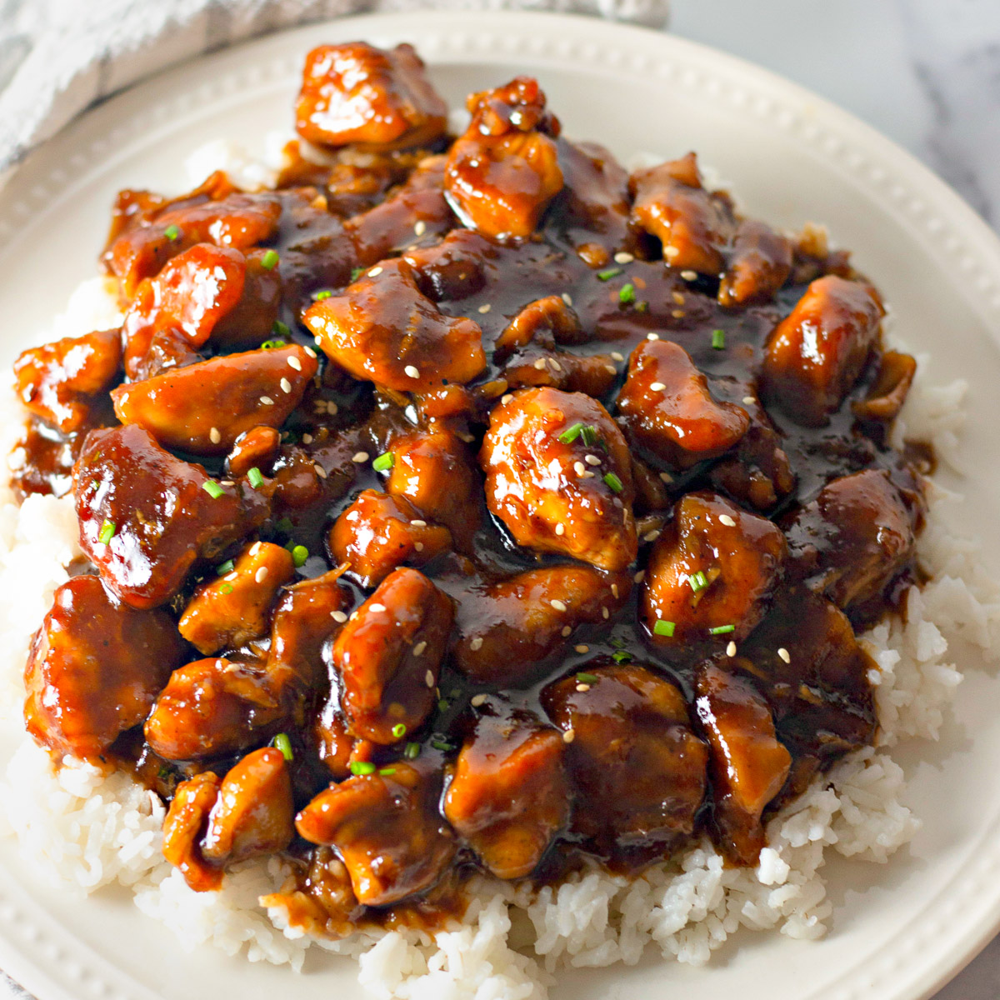

Bourbon Chicken

Description
I searched and finally found this recipe on the internet. It is a copycat of the Bourbon Chicken sold in Chinese carry-outs in my hometown. This recipe is so good that my sons gobble it up leaving me just a spoonful. Their excuse was they thought I had eaten.
Ingredients
- 2 lbs boneless chicken breasts, cut into bite-size pieces
- 1 - 2 tablespoon olive oil
- 1 garlic clove, crushed
- 1/4 teaspoon ginger
- 3/4 teaspoon crushed red pepper flakes
- 1/4 cup apple juice
- 1/3 cup light brown sugar
- 2 tablespoons ketchup
- 1 tablespoon cider vinegar
- 1/2 cup water
- 1/3 cup soy sauce
Step by Step
- Heat oil in a large skillet.
- Add chicken pieces and cook until lightly browned.
- Remove chicken.
- Add remaining ingredients, heating over medium heat until well mixed and dissolved.
- Add chicken and bring to a hard boil.
- Reduce heat and simmer for 20 minutes.
- Serve over hot rice and enjoy!